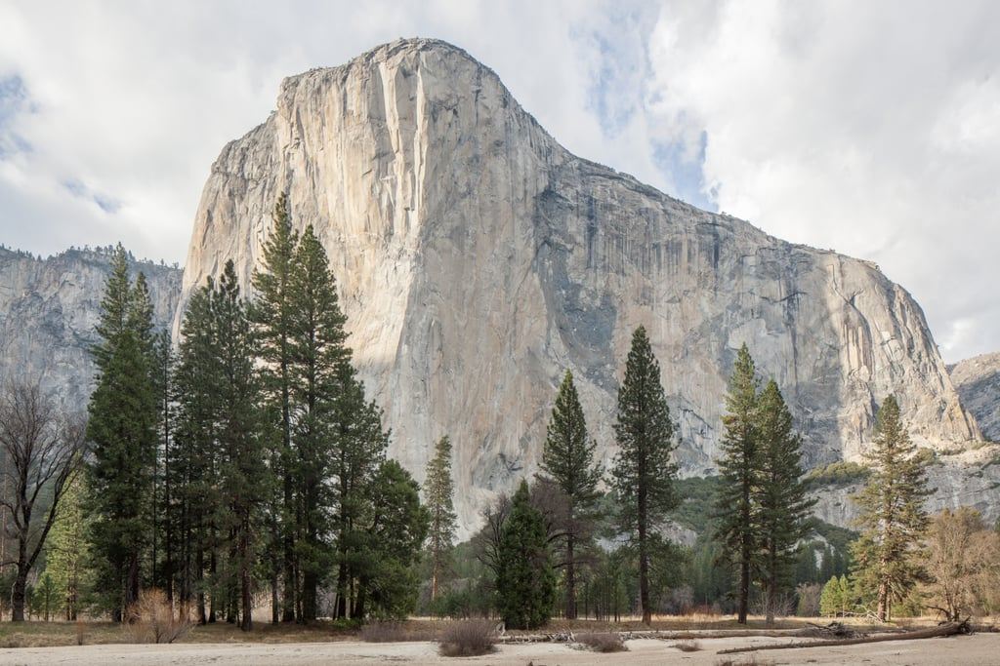
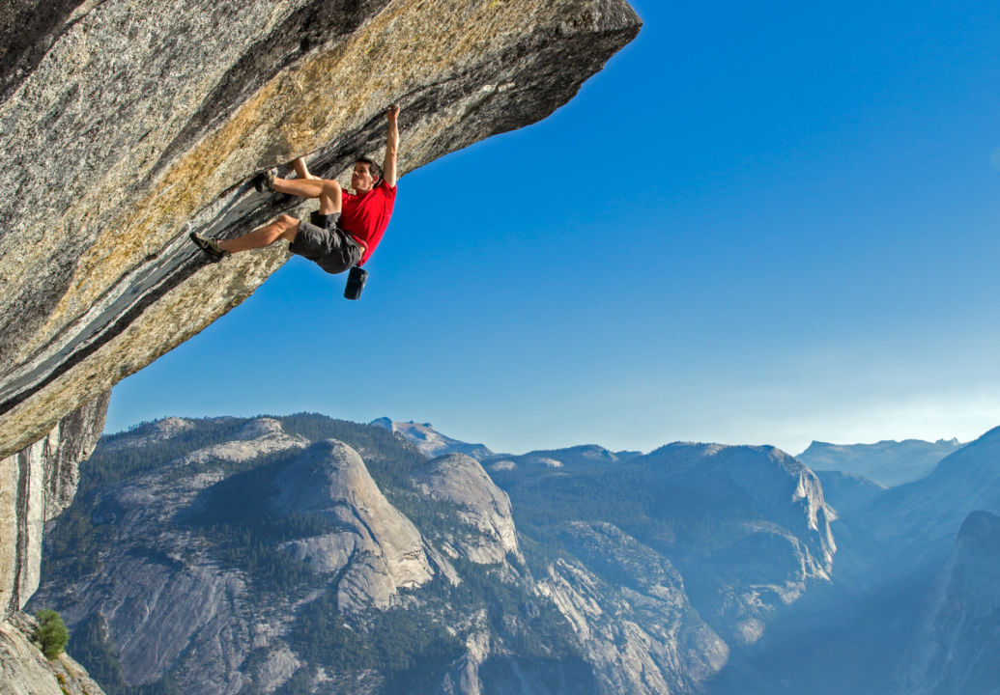

- El Capitan -
El Capitan’s iconic granite walls dominate the west end of Yosemite Valley. At more than 3,000 feet (900+ m) above the valley floor, it is 2.5 times as tall as the Empire State Building, or more than 3 times as high as the tip of the Eiffel Tower.
Coming around the corner and having El Capitan suddenly fill your field of vision sometimes moves people to tears. It is a beacon for visitors, a muse for photographers and one of the world’s ultimate challenges for climbers.
- Free Solo -
Free Solo means to climb a mountain or piece of rock without any safety ropes to catch one if they fall. Free Solo climbers can use any kind of shoe and often carry chalk to assist with gripping the rocks.
